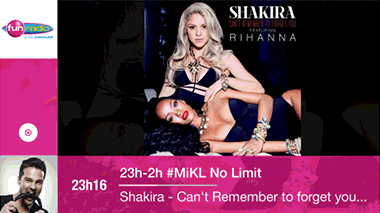

Here is the key-videos concepts used to sell the Radiovision project to GIE les indépendants client (french group of +150 independant radios). It's a new kind of project, we find very few examples of this on the internet. I had to play with the gold number and the different videos formats proportions. Lisibility on small formats like mobile was a big point. The final work on this was about finding the animation between all those blocks to make the whole result pleasant to the eyes. Mondrian and the mondrianism trend from webdesign was used as a reference for this. The engineer got some serious headache with that! All videos from the Radioline Youtube channel are creating/editing by me; feel free to take a look!
